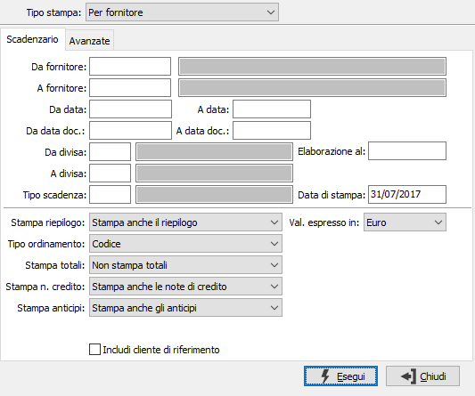
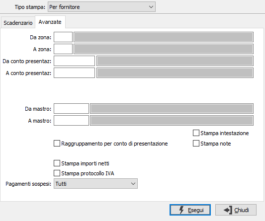
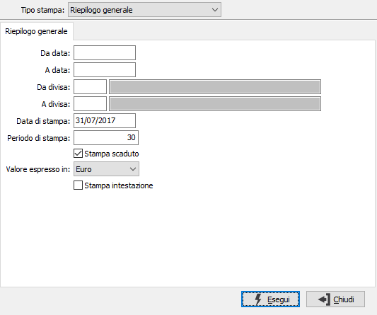

Stampa scadenzario fornitori
Il programma, provvede alla stampa di scadenzario passivo per fornitori, per divisa, riepiloghi generali e per giorni medi assumendo informazioni dalle tabelle Movimenti scadenze. Le finestre video di input sono parametrizzate e si modificano in funzione del tipo di stampa prescelto.
TIPO STAMPA: check box per definire il tipo di stampa da effettuare. Valori ammessi: Scadenzario per fornitore; Scadenzario per divisa; Riepilogo generale; Per giorni medi.
Lo scadenzario per giorni medi effettua il calcolo dei giorni medi di pagamento al fine di raffrontare i tempi teorici ed i tempi effetti di pagamento.
Tipi stampa per Fornitore, per divisa e per giorni medi

DA FORNITORE: indicare il codice del fornitore da cui si intende iniziare la stampa dello scadenzario; confermando a vuoto la stampa inizia dal primo codice valido. Sul campo è attiva la funzione di ricerca (F9).
A FORNITORE: indicare il codice del fornitore con cui si intende far terminare la stampa dello scadenzario; se si conferma a vuoto la stampa termina con l'ultimo codice valido. Sul campo è attiva la funzione di ricerca (F9).
DA DATA: indicare la data di scadenza da cui si vuole iniziare la lettura dei movimenti. Confermando a vuoto la stampa inizia con il primo movimento valido presente sulla tabella movimenti contabili per il primo conto selezionato.
A DATA: indicare la data di scadenza con cui si vuole terminare la lettura dei movimenti. Confermando a vuoto la stampa termina con l’ultimo movimento valido presente sulla tabella movimenti contabili per l'ultimo conto selezionato.
DA DATA DOC.: indicare la data documento da cui si vuole iniziare la lettura dei movimenti. Confermando a vuoto la stampa inizia con il primo movimento valido presente sulla tabella movimenti contabili per il primo conto selezionato.
A DATA DOC.: indicare la data documento con cui si vuole terminare la lettura dei movimenti. Confermando a vuoto la stampa termina con l’ultimo movimento valido presente sulla tabella movimenti contabili per l'ultimo conto selezionato.
DA DIVISA: indicare il codice della prima divisa di cui vogliono stampare le scadenze. Confermando a vuoto la selezione inizia con la prima divisa valida. Sul campo è attiva la funzione di ricerca (F9).
A DIVISA: indicare il codice dell’ultima divisa di cui vogliono stampare le scadenze. Confermando a vuoto la selezione termina con l’ultima divisa valida. Sul campo è attiva la funzione di ricerca (F9).
TIPO SCADENZA: indicare la modalità di pagamento di cui si vuole stampare lo scadenzario. Sul campo è attiva la funzione di ricerca (F9).
ELABORAZIONE AL: consente di stampare lo scadenzario in essere alla data specificata.
DATA DI STAMPA: indicare la data in cui viene stampato lo scadenzario (viene proposta la data di sistema, modificabile).
STAMPA RIEPILOGO: combo box per determinare le modalità di stampa del riepilogo finale. Valori ammessi: Non stampa il riepilogo; Stampa anche il riepilogo.
TIPO ORDINAMENTO: combo box per determinare il tipo di ordinamento. Valori ammessi: Codice; Ragione sociale
STAMPA TOTALI: combo box per determinare le modalità di stampa dei totali. Valori ammessi: Non stampa i totali; Stampa i totali per data scadenza; Stampa i totali per mese
STAMPA NOTE DI CREDITO: check box significativo nel caso in cui si stampi lo scadenzario delle rimesse dirette; permette di selezionare in stampa anche le note di credito. Valori ammessi: Non stampa le note di credito; Stampa anche le note di credito; Stampa solo le note di credito
STAMPA ANTICIPI: check box significativo nel caso in cui si stampi lo scadenzario delle rimesse dirette; permette di selezionare in stampa anche gli anticipi. Valori ammessi: Non stampa gli anticipi; Stampa anche gli anticipi; Stampa solo gli anticipi.
INCLUDI CLIENTE DI RIFERIMENTO: se spuntato include le partite del cliente di riferimento, se presente; tali partite saranno evidenziate in corsivo in stampa.
VALORI ESPRESSI IN: definisce la moneta di conto in cui verranno visualizzati i controvalori.
Avanzate

DA ZONA: indicare il codice della zona da cui si intende iniziare la stampa dello scadenzario; confermando a vuoto la stampa inizia dal primo codice valido. Sul campo è attiva la funzione di ricerca (F9).
A ZONA: indicare il codice della zona con cui si intende far terminare la stampa dello scadenzario; se si conferma a vuoto la stampa termina con l'ultimo codice valido. Sul campo è attiva la funzione di ricerca (F9).
DA CONTO PRESENTAZIONE: indicare il codice del conto di presentazione da cui si intende iniziare la stampa dello scadenzario; confermando a vuoto la stampa inizia dal primo codice valido. Sul campo è attiva la funzione di ricerca (F9).
A CONTO PRESENTAZIONE: indicare il codice del conto di presentazione con cui si intende far terminare la stampa dello scadenzario; se si conferma a vuoto la stampa termina con l'ultimo codice valido. Sul campo è attiva la funzione di ricerca (F9).
DA MASTRO: indicare il codice del mastro da cui si intende iniziare la stampa dello scadenzario; confermando a vuoto la stampa inizia dal primo codice valido. Sul campo è attiva la funzione di ricerca (F9).
A MASTRO: indicare il codice del mastro con cui si intende far terminare la stampa dello scadenzario; se si conferma a vuoto la stampa termina con l'ultimo codice valido. Sul campo è attiva la funzione di ricerca (F9).
RAGGRUPPAMENTO PER CONTO DI PRESENTAZIONE: selezionando questa opzione la stampa sarà raggruppata ed ordinata per conto di presentazione.
STAMPA IMPORTI NETTI: valido per i pagamenti a percipienti, se spuntato presente il valore netto delle ritenute.
STAMPA PROTOCOLLO IVA: definisce se aggiungere alla stampa anche il protocollo IVA (casella con segno di spunta).
PAGAMENTI SOSPESI: definisce se e quali pagamenti sospesi includere nella stampa: nessuna selezione, anche bloccati temporanei, anche bloccati definitivi, tutti, solo i bloccati.
STAMPA INTESTAZIONE: indica se deve essere stampata come prima pagina del report una pagina contenente tutte le informazioni inerenti i criteri di selezione specificati per il report stesso (casella con segno di spunta).
STAMPA NOTE: indica se deve essere stampato il contenuto del campo note presente sulle scadenze.
Tipo stampa Riepilogo generale

DA DATA: indicare la data di scadenza da cui si vuole iniziare la lettura dei movimenti. Confermando a vuoto la stampa inizia con il primo movimento valido presente sulla tabella movimenti contabili per il primo conto selezionato.
A DATA: indicare la data di scadenza con cui si vuole terminare la lettura dei movimenti. Confermando a vuoto la stampa termina con l’ultimo movimento valido presente sulla tabella movimenti contabili per l'ultimo conto selezionato.
DA DIVISA: indicare il codice della prima divisa di cui vogliono stampate le scadenze. Confermando a vuoto la selezione inizia con la prima divisa valida. Sul campo è attiva la funzione di ricerca (F9).
A DIVISA: indicare il codice dell’ultima divisa di cui vogliono stampate le scadenze. Confermando a vuoto la selezione termina con l’ultima divisa valida. Sul campo è attiva la funzione di ricerca (F9).
DATA DI STAMPA: indicare la data in cui viene stampato il riepilogo (viene proposta la data di sistema, modificabile).
PERIODO DI STAMPA: il programma produce un prospetto a colonne, e ciascuna colonna raggruppa i crediti o i debiti di un determinato periodo in giorni. In questo campo deve essere indicato appunto il numero di giorni che compongono tale periodo.
STAMPA SCADUTO: check box per definire se stampare o meno i debiti scaduti. Valori ammessi: vuoto = non stampa i debiti scaduti; spunta = stampa anche i debiti scaduti.
VALORI ESPRESSI IN: definisce la moneta di conto in cui verranno visualizzati i controvalori.
STAMPA INTESTAZIONE: indica se deve essere stampata come prima pagina del report una pagina contenente tutte le informazioni inerenti i criteri di selezione specificati per il report stesso (casella con segno di spunta).